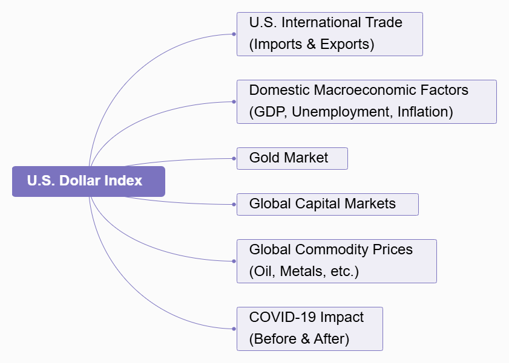

Introduction
Understanding the U.S. Dollar Index (DXY)
The U.S. Dollar Index (DXY) is a key measure of the value of the U.S. dollar relative to a basket of foreign currencies. As the world’s primary reserve currency, the U.S. dollar plays a significant role in global trade, finance, and economic stability. The index helps track fluctuations in the dollar’s strength and provides valuable insights into its influence on both domestic and international markets.
This project aims to analyze the fluctuations of the U.S. Dollar Index (DXY) over time and explore its impact on several key aspects of both the U.S. and global economies. By analyzing time series data, this project will investigate how changes in the U.S. dollar influence various sectors and provide a broader understanding of its economic significance.
The Big Picture

The U.S. Dollar Index (DXY) has a wide-reaching impact on many areas of the global economy, making it a critical subject of study. This analysis will consider the following five main areas:
U.S. International Trade: The value of the dollar directly affects the volume and value of U.S. imports and exports. Understanding this relationship is key to analyzing how global trade dynamics shift in response to currency fluctuations.
Domestic Economic Indicators: The strength or weakness of the dollar has implications for domestic economic growth, employment rates, and inflation. These indicators are essential for assessing the broader economic health of the United States.
The Gold Market: The price of gold is often inversely related to the U.S. dollar. Examining how the dollar’s fluctuations affect gold prices can shed light on global investor behavior and market sentiment.
Global Capital Markets: Changes in the value of the dollar can influence capital flows, global investment decisions, and asset allocations. This section will explore the dollar’s role in shaping global financial markets.
Global Commodity Prices: As many commodities are priced in U.S. dollars, shifts in the dollar’s value can have significant effects on the pricing and demand for key resources like oil and metals.
COVID-19 Impact: The COVID-19 pandemic has had a profound effect on global economies, including currency markets. This section will examine how the pandemic influenced the U.S. Dollar Index and its effects on various economic sectors before and after the crisis.
Guiding Questions
What effects does a stronger U.S. dollar have on U.S. exports?
How do changes in the U.S. dollar impact overall demand within the U.S. economy?
What is the relationship between the U.S. dollar and inflation rates?
What are the long-term effects of a volatile U.S. dollar on economic stability and growth in the U.S.?
How does the U.S. Dollar Index correlate with fluctuations in gold prices over time?
Are there certain periods when gold’s price movement is especially sensitive to changes in the dollar?
How does the strength or weakness of the U.S. dollar influence global capital flows, especially in emerging markets?
How does the U.S. dollar influence global oil prices?
How did the Federal Reserve’s response to COVID-19 influence the U.S. dollar’s strength or weakness?
What long-term changes in the U.S. Dollar Index can be observed after the COVID-19 crisis?
Literature Review
U.S. International Trade
Bruno and Shin (2020)1 investigate the impact of U.S. dollar appreciation on international trade, focusing on the financial channel through which exchange rates influence export performance. They highlight that while a stronger dollar typically improves trade competitiveness for exporters, it also tightens credit conditions, particularly for firms reliant on dollar-funded bank credit. Their study shows that exporters with greater exposure to dollar-based financing experience a significant slowdown in exports due to reduced credit availability, even when controlling for other factors. The authors argue that this financial channel, which operates counter to the competitiveness channel, has a substantial effect on global trade, especially for credit-intensive sectors. Their findings emphasize the importance of the U.S. dollar not only as a trade currency but also as a key factor in shaping global trade finance, with dollar fluctuations having a notable impact on export growth.
Domestic Macroeconomic Factors
Manning and Andrianacos (2020)2 explore the relationship between U.S. dollar movements and domestic inflation, using cointegration analysis to assess both short-term and long-term effects. Their study finds that, in the long run, there is no significant relationship between the yen/dollar exchange rate and U.S. price levels. However, in the short term, the authors observe that U.S. monetary authorities adjust policies in response to changes in consumer prices and exchange rates, although the price level itself does not directly respond to fluctuations in the exchange rate. This suggests that while the U.S. dollar may influence inflationary pressures in the short term, it does not have a lasting impact on the domestic price level when controlling for other macroeconomic factors, such as income and interest rates. Their findings contribute to the understanding of how domestic economic conditions, alongside currency movements, shape inflation dynamics in the U.S. economy.
The Gold Market
Mo, Nie, and Jiang (2020)3 explore the dynamic relationships between the gold market, the U.S. dollar, and the crude oil market, with a particular focus on the impact of the global financial crisis. Their analysis reveals that there is a long-term dependence among these markets, with a positive dynamic relationship between gold and oil, and a negative relationship between oil and the U.S. dollar. Using fractional cointegration and DCC-MGARCH models, they find that fluctuations in the U.S. dollar have a notable effect on the gold market, particularly after the 2007-2009 financial crisis. The study also highlights a non-linear causal relationship, where gold influences the U.S. dollar and the U.S. dollar in turn affects crude oil prices. These findings emphasize the interconnectedness of the gold market with both the dollar and the oil market, offering valuable insights for investors and policymakers in managing portfolios and crafting macroeconomic strategies.
Global Capital Markets
Siddiqui (2020)4 critically reviews the role of the U.S. dollar in the global economy, particularly in light of the U.S.’s relative decline as a global economic power. Despite this decline, the U.S. continues to dominate global financial systems through the operations of multinational corporations and its control over international financial architecture. The study emphasizes the central role of the U.S. dollar as the world’s primary reserve currency, while also acknowledging the rising challenge from the Chinese renminbi. Siddiqui argues that while the renminbi poses a potential threat to the U.S. dollar’s supremacy, it is unlikely to replace the dollar as the global currency in the near future. The paper highlights the ongoing importance of the U.S. dollar in global capital markets, as well as the growing pressures on the U.S. economy due to persistent trade deficits. This underscores the complex dynamics of currency dominance and its implications for global economic stability.
Global Commodity Prices
Boz, Gopinath, and Plagborg-Møller (2020)5 examine the influence of the U.S. dollar on global trade and commodity prices. They find that fluctuations in the U.S. dollar exchange rate significantly affect trade prices and volumes. A stronger U.S. dollar tends to decrease global trade volumes, including commodities, with a 1% appreciation in the dollar leading to a 0.6-0.8% decline in trade volumes. Their study highlights the U.S. dollar’s dominant role in global trade, suggesting that its fluctuations are a key predictor of commodity prices and global inflation, particularly in markets for oil and metals. This reinforces the notion that the U.S. dollar is a central factor in shaping commodity price movements worldwide.
COVID-19 Impact
According to Bertaut et al. (2023)6, despite the increased geopolitical risks and the rise of alternative currencies, the U.S. dollar’s position as the world’s primary reserve currency remained largely stable post-COVID. The U.S. Dollar Index (DXY), which measures the dollar’s strength against a basket of currencies, reflected heightened volatility during the pandemic as global markets reacted to economic uncertainties. However, the dollar’s central role in global finance was reinforced, with countries continuing to anchor their currencies to the dollar. The author suggest that while challenges to dollar dominance, such as the rise of the Chinese renminbi and digital currencies, are emerging, the U.S. dollar’s status remains secure, particularly due to its liquidity, stability, and the extensive use of dollar-denominated assets in international markets.